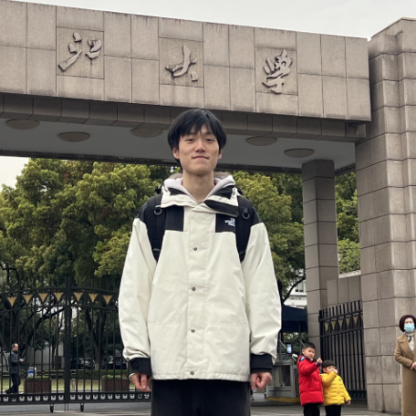

Qingyu Yin
B.A. in English (Linguistics) & Computer Science
Zhejiang University
Hangzhou Innovation Center AI Lab
ABOUT ME
Hi there! My name is Qingyu Yin , and I am an undergraduate student from Zhejiang University, class of 2022.
I am currently pursuing a dual degree in English and Computer Science. I am now under the guidance of Prof. Qiang Zhang .
My research interests lie at the intersection of Natural Language Processing its applications in Bioinformatics ,
as well as utilizing machine learning techniques to advance scientific research in the field of AI for Science - AI4Science .
My work is dedicated to discovering more efficient LLM infrastructure and developing a universal framework
suitable for various downstream task scenarios, while exploring the interpretability of these models.
I also have some research in genomics and transcriptomics, and am exploring how to use AI tools to accelerate
scientific discoveries in related fields.
At present, I am fortunate to be interning at the HIC-ZJU Laboratory of Biological and Molecular Intelligence.
LATEST NEWS
2023.9.29
Our paper DLCNet: Enabling Data-Dependency into Long-Range Convolution has been submitted to ICLR 2024!
2023.7.19
Talking with Prof. Jiannong Cao's team from Hongkong Polytechnique University
2023.7.8 - 2023.7.9
Joined WAIC 2023, Automation Intelligence Molecular Manufacturing Conference and 'AI+Chemistry and Chemical Engineering' Sub-forum as a visitor
2023.3
Joined HIC-ZJU Prof. Qiang Zhang's Lab as an intern student
2022.9
Freshman of ZJU Class of 2022
2020.10 - 2020.12
Got award of NOIP Shandong Second Prize, top 200
Got award of CSP Shandong Second Prize
Got award of NOIP Zibo First Prize, top 5
PUBLICATIONS
DLCNet: Enabling Data-Dependency into Long-Range Convolution - ICLR 2024
In recent years, the Transformer architecture and self-attention mechanism have become the first choice for sequence modeling, but they encounter significant computational challenges when processing lengthy sequences. Long-range convolution has emerged as a promising alternative to self-attention, offering distinct advantages across various domains. However, current long-range convolution architectures still face several issues, such as excessive parameter usage and limited in-context learning capabilities. To tackle these challenges, we propose a Data-dependent Long-range Convolution Network (DLCNet) that introduces data dependency through three key modules: Layer-Wise Mapping, Rectify SideNet, and SWEAP Operator. DLCNet effectively facilitates in-context learning within a reasonable parameter scale. Extensive experiments have demonstrated that DLCNet surpasses the state-of-the-art baselines in processing lengthy sequences, even when trained with short sequences.
PROJECTS
MiniChatGPT
We designed a web-based ChatGPT interface program using Python, JavaScript, and MySQL. It includes features such as hotword search and data storage. Our project has successfully passed the course's evaluation.
OneAPI-based DeepLearning Architecture
Inter oneAPI competition: We designed an efficient matrix multiplication acceleration algorithm and neural network infrastructure based on Intel's oneAPI. Using our architecture, we have implemented quality detection for red wine.
Collaborated with Shaojun Si (SDU)
NOTES